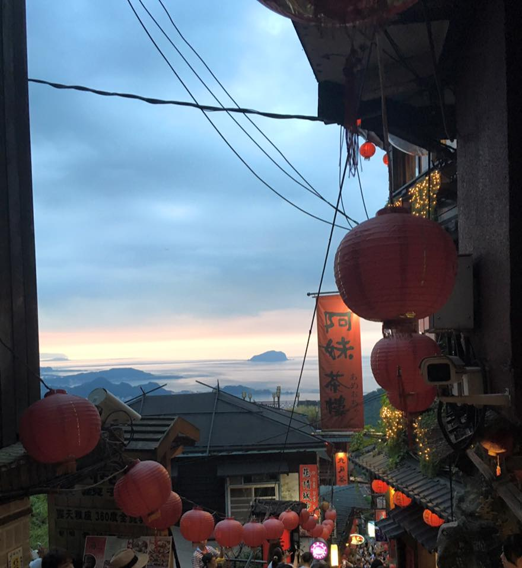
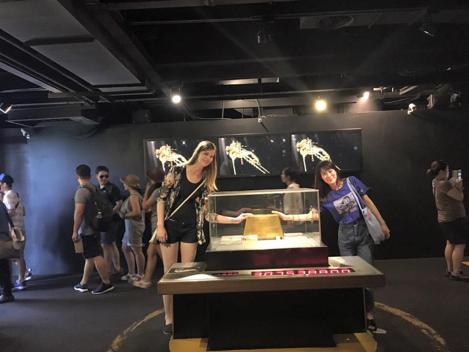
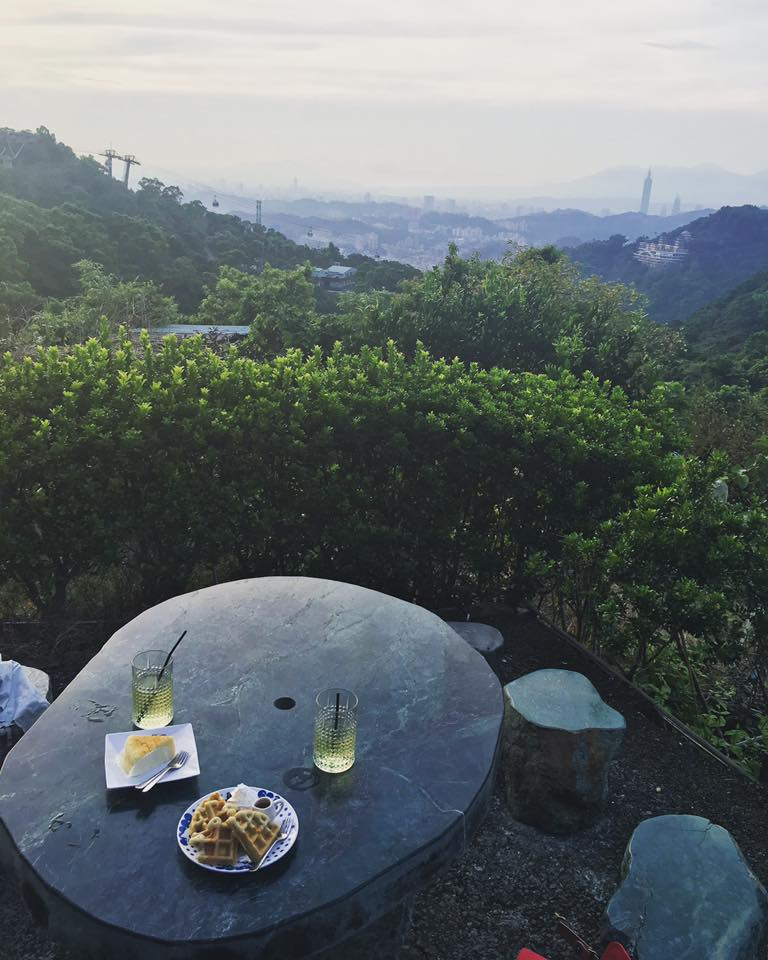

Jiufen
Jiufen is one of the top tourists cities in Taiwan besides Taipei (especially among Japanese and Korean tourists because of the film Spirited Away), but I didn't end up going until the end of my trip. Jiufen has two main old streets, and both sides are lined with shops and food stalls. It was a weekday afternoon and the place was still packed, but everyone was very polite and quiet so it didn't really feel super crowded.
We stayed until the evening and had tea on a mountainside tea house on the balcony while the sun set. The woman waiting on us taught us how to brew the tea leaves. We also met a Japanese model who was there filming herself speaking about Taiwan and having tea!
Jinguashi
Jinguashi's main attraction is the fact that it used to be a place where lots of gold was mined. We walked around for a bit, and went to a gold museum. The museum's main attraction was that you can touch one of the largest solid gold bricks in the world, so in the museum everyone basically just rushes through to get to the gold brick. The line was maybe 15 minutes long, and you can get your picture taken while touching the brick!
Maokong
Maokong is a little touristy village on top of a mountain South of Taipei with lots of great, locally grown tea. To get there, you can take a gondola and also view some other small villages and mountains along the way. Once we arrived, we walked around a bit, went to a tea museum and talked to a tea farmer, and had tea on a mountain overlooking Taipei.
A link to my full album of Taiwan photos can be found here. Keep checking back for weekly updates!
Questions? Comments? Don't hesitate to contact me!